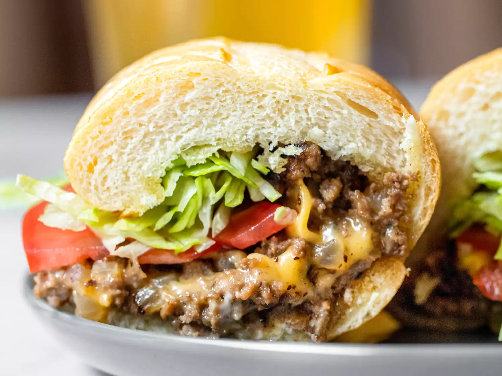

Prep Time: 10 mins
Cook Time: 20 mins
Total Time: 30 mins
Servings: 6 servings
Yield: 6 sandwiches
Ingredients
- 2 pounds (80/20 blend) ground beef
- 1 white onion, chopped
- 4 cloves garlic, chopped
- 1 teaspoon kosher salt
- 1/2 teaspoon black pepper
- 1 tablespoon Worcestershire sauce
- 6 hoagie or bolillo rolls
- 12 slices American cheese
- 6 tablespoons mayonnaise
- Shredded iceberg lettuce, for serving
- Tomato slices, for serving
Instructions
- Cook the ground beef:
- Add your ground beef to a large, dry pot or skillet over medium-low heat. Slowly cook so the fat renders out. Stir regularly, breaking up the beef as it cooks, until it is in crumbles but not fully cooked (some of the meat will still be pink).
- Add the onions, garlic, and seasoning:
- Once the beef is browned and most of the fat has rendered out (about 7-8 minutes of cooking), turn the heat up to medium and add onions and garlic. Cook for another 4-5 minutes until vegetables soften. Season the filling with salt, pepper, and Worcestershire sauce. Remove from heat.
- Toast the buns:
- Slice your rolls in half and toast them in batches over a griddle or in a large skillet over medium heat until browned.
- Combine the cheese and ground beef:
- For each sandwich, portion out about 1/6 of the beef filling at a time and add to the griddle or skillet over medium-low heat. Let the filling get hot and then cover it with two slices of American cheese. Let it sit long enough for the cheese to melt. If you like, roughly “chop” the cheese into the beef mixture with the side of a metal spatula.
- Place the roll on the ground beef:
- Add 1 tablespoon of mayo to one side of your toasted roll and cover the beef filling with a toasted roll, by placing the roll, toasted side down, on top of the chopped beef mixture.
- Finish the sandwich and serve:
- After 30 seconds, use a spatula to flip the roll, keeping the filling inside. If any filling falls out, use the spatula to add it back to the roll. Repeat as needed to make other sandwiches.
- Add shredded lettuce and sliced tomato to the sandwich. Cut in half and serve immediately.
- Leftover chopped cheese filling can be stored in the fridge in an airtight container for 3-4 days. You can add the filling straight from the fridge to a griddle to make a sandwich.
- Only make as many sandwiches as you need to, but if you have leftover filling, that’s great!